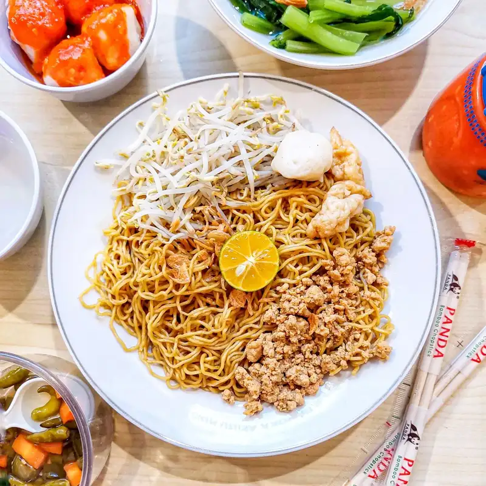

Terima kasih kepada pihak yang menyediakan asset untuk website ini, berikut credit/lisensi kami cantumkan
| Asset | Sumber | Preview |
| Banner | https://www.vecteezy.com/vector-art/966028-indonesian-food-poster (Kunjungi) |  |
| Restaurant Icon | https://www.flaticon.com/free-icons/restaurant (Kunjungi) |  |
| Makanan Rendang | https://www.astronauts.id/blog/resep-rendang-daging-sapi-untuk-lebaran-gurih-dan-nikmat/ (Kunjungi) |  |
| Makanan Pempek | https://www.masakapahariini.com/resep/resep-pempek-ikan-tenggiri-kuah-cuko-pedas-sedap-dan-tidak-alot/ (Kunjungi) | |
| Makanan Mi Aceh | https://www.orami.co.id/magazine/makanan-tradisional (Kunjungi) | |
| Makanan Ayamtaliwang | https://www.orami.co.id/magazine/makanan-tradisional (Kunjungi) | |
| Makanan Mi Bangka | https://www.orami.co.id/magazine/makanan-tradisional (Kunjungi) |  |
| Makanan Gudeg | https://www.orami.co.id/magazine/makanan-tradisional (Kunjungi) | |
| Makanan Ayam Betutu | https://www.orami.co.id/magazine/makanan-tradisional (Kunjungi) | |
| Makanan Soto banjar | https://www.orami.co.id/magazine/makanan-tradisional (Kunjungi) | |
| Makanan Coto makasar | https://www.orami.co.id/magazine/makanan-tradisional (Kunjungi) | |
| Menu App | https://www.flaticon.com/free-icons/ui (Kunjungi) | |
| Galery Icon | https://www.flaticon.com/free-icons/circle (Kunjungi) |  |
| Maps Icon | https://www.flaticon.com/free-icons/picture (Kunjungi) |  |